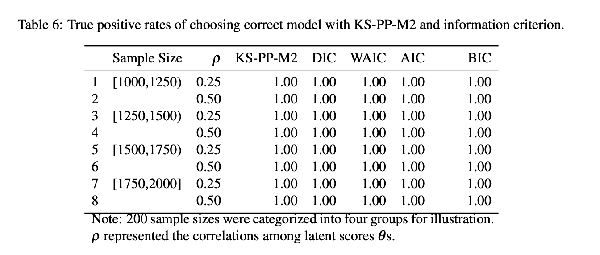
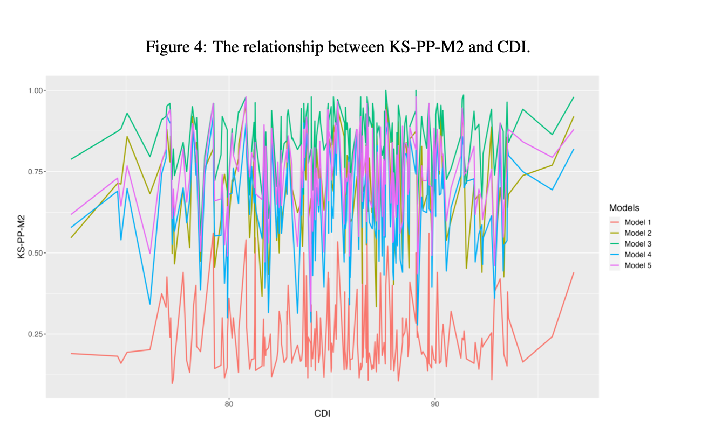

flowchart LR
style C fill:#99ff99,stroke:#333,stroke-width:2px
style K fill:#99ff99,stroke:#333,stroke-width:2px
style H fill:#ff99cc,stroke:#333,stroke-width:2px
style M fill:#ff99cc,stroke:#333,stroke-width:2px
style E fill:#f9f,stroke:#333,stroke-width:2px
style F fill:#f9f,stroke:#333,stroke-width:2px
style G fill:#f9f,stroke:#333,stroke-width:2px
Z[(Data)] --> A & E & I
subgraph Model 1
A[LCDM 1] -->|Bayesian \n estimate| B(Posterior\n Distribution)
B -->|sample| C(Posterior \n Predictive \n M2 fa:fa-star)
C --> D{{KS Test}}
D --> H[KS-PP-M2 fa:fa-star]
end
subgraph Reference: BayesNet Model
E[BayesNet] --> |Bayesian \n estimate| F(Posterior \n Distribution)
F -->|sample| G(Posterior \n Predictive \n M2 fa:fa-star)
end
G --> D & L
subgraph Model 2
I[LCDM 2] -->|Bayesian \n estimate| J(Posterior\n Distribution)
J -->|sample| K(Posterior \n Predictive \n M2 fa:fa-star)
K --> L{{KS Test}}
L --> M[KS-PP-M2 fa:fa-star]
end
H & M --> N{Decision}
Dissertation Defence
TITLE: A novel method for model selection in Bayesian Diagnostic Classification Modeling
Jihong Zhang
University of Iowa
2022-10-24
0.1 Outline
Background (5 minutes)
Performance measures (5 minutes)
Simulation study (15 minutes)
Empirical study (10 minutes)
Conclusion (5 minutes)
Discussion (5 minutes)
1 Backgroud
- Research motivation:
- Why Q-matrix misspecification is a problem?
- The advantages of the proposed method over previous approaches?
- Research objectives
1.1 Research Motivation
Q-matrix is usually determined by expert judgement, so there can be uncertainty about some of its elements. Model selection methods are necessary to select the model with the “correct” Q-matrix.
Previous model selection methods such as information criterion and Bayes Factors are not flexible regarding checking specific aspects of data
1.1.1 Posterior predictive checking (PPC)
Advantages of PPC
- PPC is a flexible tool and implemented in most Bayesian software.
Drawbacks of PPC
PPC is not fully Bayesian since it doesn’t take the uncertainty of observed data into account
PPC uses data twice
1.2 Research Objectives
To construct a novel PPMC method using limited-information model fit indices in Bayesian LCDM
Simulation study: to determine the performance of the proposed method under different conditions and compare it to previous model checking methods
Empirical study: to investigate the utility of PPMC with limited-information model fit indices in real settings
1.3 Overview: Proposed Approach
1.4 Performance measures
- Cognitive diagnostic index - item/test discrimination index
- Posterior predictive M2 - absolute fit
- KS-PP-M2 and InfoCrit (AIC/BIC/DIC/WAIC) - relative fit
2 Simulation Study
2.1 Research Questions
Is the proposed method appropriate for detecting model-data misfit with varied degree of Q-matrix misspecification
Compared to information criteria, does the proposed approach have higher true positive rate (TPR) when selecting the correct model?
How does the overall discrimination power indicated by Cognitive Diagnostic Index affects the performance of the proposed method in selecting the model with best Q-matrix?
2.2 Simulation Settings
Generate simulated data sets under the LCDM framework with two main factors:
- sample size: 200 draws from 1000 to 2000
- attribute correlation: {0.25, 0.5}
- 400 conditions in total
30 items and 5 attributes
Latent attributes: mastery status of attributes for each individual are determined by cutting attribute scores. Item parameters are randomly sampled.
Based on attribute correlation, continuous attribute scores are first generated for each sample.
Then continuous attribute scores are dichonomized by cutting the scores with the cutting scores
Finally. observed item responses are generated with attribute status and corresponding item parameters
2.3 Analysis Models
- Bayesian Network model
- Data generation model - LCDM
- Model with 3 items (10%) underspecify attributes
- Model with 6 items (20%) underspecify attributes
- Model with 3 items (10%) misspecify attributes
- Model with 6 items (20%) misspecify attributes
Q-matrix


2.4 MCMC settings
- All Bayesian models are estimated using blatent R package in R version 3.6
- 4 MCMC with 4000 iterations with first 1000 discarded
- Prior distribution are set up by default of blatent.
- All parameters estimation converged with PSRF < 1.1
3 Result (Simulation study)
3.1 Summary of Posterior Predictive M2 (500 draws)
| BayesNet | Correct1 | Underspecified Qmatrix | Incorrect specified Qmatrix | |||
|---|---|---|---|---|---|---|
| 10% | 20% | 10% | 20% | |||
| Skill Correlation is .25 | ||||||
| [1000,1250) | 23.23(1.94) | 21.49(2.08) | 28.92(3.19) | 33.51(3.97) | 27.92(3.36) | 30.02(3.49) |
| [1250,1500) | 30.48(3.13) | 29.03(2.90) | 40.88(6.60) | 48.82(8.19) | 39.66(5.47) | 42.73(5.95) |
| [1500,1750) | 39.36(3.82) | 38.30(4.15) | 57.56(8.70) | 69.60(10.70) | 53.99(8.13) | 58.41(9.03) |
| [1750,2000) | 48.96(3.09) | 49.55(3.65) | 75.40(10.02) | 90.90(11.19) | 68.45(7.70) | 75.26(9.15) |
| Skill Correlation is .50 | ||||||
| [1000,1250) | 24.83(2.97) | 24.07(2.95) | 32.25(5.36) | 36.69(5.78) | 32.59(5.58) | 34.44(5.43) |
| [1250,1500) | 34.24(3.70) | 33.72(3.58) | 47.70(6.60) | 54.91(7.26) | 47.04(6.00) | 49.96(5.94) |
| [1500,1750) | 43.38(3.11) | 45.76(3.96) | 63.14(7.27) | 74.70(9.73) | 65.10(7.17) | 69.42(8.05) |
| [1750,2000) | 55.54(3.48) | 60.55(4.74) | 94.06(10.59) | 111.40(12.80) | 90.52(9.36) | 97.18(10.01) |
| 1 Bold font: The model with smallest average values of PP-M2. | ||||||
3.2 Path plot for PP-M2

Title: Path Plot for Average Posterior Predictive M2
3.3 Findings
The correct model and the BayesNet model have lowest PP-M2 (best fit).
- When sample size is relatively small, the correct model slightly fit better than the BayesNet;
- When sample size is relatively large, the BayesNet fits better than the correct model
As sample size increases, the difference of PP-M2 among models gets larger. In other words, the PP-M2 has asymptotically more power detecting misfit.
The BayesNet model has least uncertainty of model predictive accuracy in term of variations of average PP-M2
As more items misspecify/underspecify attributes in Q-matrix, the PP-M2 gets higher.
3.4 Compare KS-PP-M2 to other methods
| Models | Information Criterion1,2 | KS-PP-M2 | ||||
|---|---|---|---|---|---|---|
| DIC | WAIC | AIC | BIC | |||
| Skill Correlation is .25 | ||||||
| Correct | Model 1 | 44,301(8,816) | 44,303(8,817) | 44,387(8,812) | 45,291(8,846) | 0.18(0.04) |
| Underspecified | Model 2: 10% | 44,869(8,931) | 44,872(8,932) | 44,961(8,927) | 45,865(8,961) | 0.66(0.14) |
| Underspecified | Model 3: 20% | 45,400(9,028) | 45,406(9,030) | 45,500(9,024) | 46,404(9,058) | 0.83(0.10) |
| Misspecified | Model 4: 10% | 44,842(8,905) | 44,845(8,907) | 44,932(8,902) | 45,805(8,934) | 0.60(0.13) |
| Misspecified | Model 5: 20% | 45,110(8,952) | 45,113(8,953) | 45,188(8,949) | 45,997(8,979) | 0.70(0.12) |
| Skill Correlation is .50 | ||||||
| Correct | Model 1 | 45,607(9,219) | 45,612(9,221) | 45,699(9,215) | 46,614(9,250) | 0.33(0.11) |
| Underspecified | Model 2: 10% | 46,152(9,341) | 46,159(9,342) | 46,250(9,337) | 47,165(9,372) | 0.75(0.13) |
| Underspecified | Model 3: 20% | 46,659(9,448) | 46,668(9,450) | 46,763(9,444) | 47,677(9,479) | 0.86(0.10) |
| Misspecified | Model 4: 10% | 46,172(9,326) | 46,178(9,327) | 46,268(9,322) | 47,150(9,356) | 0.75(0.13) |
| Misspecified | Model 5: 20% | 46,403(9,373) | 46,409(9,374) | 46,485(9,369) | 47,304(9,401) | 0.80(0.10) |
| 1 Bold: The model with smallest average value of model selection indice. | ||||||
| 2 Information Criterion & KS-PP-M2: lower values better model fit | ||||||
3.5 True Positive Rate:
True Positive Rates of choosing correct model
3.6 Effects of Cognitive Diagnostic Index
3.7 Effects of Cognitive Diagnostic Index (Cont.)

3.8 Conclusion (Simulation study)
Posterior predictive M2 statistics showed the Bayesian Network model and the correct model have best model fit.
Similar to information criteria, KS-PP-M2 can select data generation model from models with Q-matrix misspecification
Higher Q-matrix misspecification, KS-PP-M2 has higher values, which suggest worse model fit.
Compared to other methods, KS-PP-M2 has same power of selecting the better model and detecting Q-matrix misspecification under all conditions.
CDI (test-level discrimination power) has insignificant effect on the fit statistics of the proposed method.
4 Emprical Study
4.1 Research Questions
- How the proposed approach can be used for the model selection in real settings?
- Is the performance of the proposed approach comparable to other IC methods?
4.2 Design
The Examination for Certificate of Proficiency in English (ECPE) data was used as the example data.
One reference model and two analysis models: (1) three-dimensional model (the best fitted model in Templin & Hoffman, 2013); (2) two-dimensional model with randomly generated Q-matrix.
Measures: (1) absolute fit: PP-M2, (2) relative fit: KS-PP-M2, DIC and WAIC
4.3 Data and Settings
- ECPE data has 2,922 test takers and 28 items.
- Bayesian estimation were used with 2000 iterations and 1000 discarded burn-ins.
- Prior distribution setups are by default of blatent package
5 Result (Empirical study)
5.1 Density Plot of Posterior predictive M2

Note: solid line (the BayesNet model); dotted model (the three-dimension model); dashed line (the two-dimension model).
5.2 Model Selection Indices

Note: Model 1 (three dimensional model); Model 2 (two dimensional model).
5.3 Findings (Emprical study)
According to the graphical checking of PP-M2, the BayesNet model is the best-fitting model, then followed by the three-dimensional model. The two-dimensioanl model has worst model fit.
DIC, WAIC, KS-PP-M2 all suggested that the three-dimensional model is better than the two-dimensional model.
KS-PP-M2 suggested that neither the three-dimensional model and the two-dimensional model have close model fit with BayesNet model.
5.4 Conclusion
- In both simulation and empirical study, posterior predictive M2 suggest BayesNet models and data generation model have close model fit statistics.
- KS statistics for posterior predictive M2 (KS-PP-M2) has same power detecting Q-matrix misspecification with other IC methods according TPR.
- Discrimination power of data has insignificant relationship with the proposed model checking indices
- KS-PP-M2 provides graphical checking for the variation of model fit indices.
5.5 Discussion
- When comparing multiple models, varied model selection methods are recommended to report.
- In Bayesian analysis, AIC/BIC are not fully Bayesian. They are not recommended in Bayesian framework. DIC has problems such as it may produce negative estimates of the effective number of parameters in a model and it is not defined for model with discrete parameters.
- WAIC is fully Bayesian and asymptotically equal to Bayesian cross-validation. LOO is also based on cross-validation approach.
- KS-PP-M2 approach is full Bayesian and provide uncertainty of the observed data.
- KS-PP-M2 could be a relative fit and posterior predictive M2 is a absolute fit.
- KS-PP-M2 is based on the BayesNet model
- KS-PP-M2 does not relied on likelihood function.
- KS-PP-M2 takes advatages of limited-information and potentially works for data with missing data.
6 Questions
6.1 Reference
Gelman, A., & Hill, J. (2006). Data Analysis Using Regression and Multilevel/Hierarchical Models. Cambridge University Press.
6.2 Supplement: Information Criterion
DIC / WAIC
DIC is a somewhat Bayesian version of AIC that makes two changes, replacing the maximum likelihood estimate \(\theta\) with the posterior mean and replacing k with a data-based bias correction.1
WAIC is a more fully Bayesian approach for estimating the out-of-sample expectation, starting with the computed log pointwise posterior predictive density and then adding a correction for effective number of parameters to adjust for overfitting.
- DIC does not the whole posterior information and does not provide uncertainty of fit statistics.
- WAIC provides uncertainty (SE) and is popular but is not flexible to test certain aspects of data.
- Posterior predictive checking is flexible but not full Bayesian. It also has some theoretical issue.
6.3 Supplement II: Posterior predictive check
Simulating replicated data under the fitted model and then comparing these to the observed data (Gelman & Hill, 2006, p. 158)
Aims:
check local and global model-fit for some aspects of data they’re interested in
provide graphical evidence about model fit
6.4 Supplement III: “using the data twice”
One critique of posterior predictive check is it uses the data twice (Blei, 2011), which means data is not only used for estimating the model but also for checking if the model fits to the data.
- This is a bad idea, because it violates the likelihood principle.
- A typical way in statistics and machine learning literature:
Validate the model on external data
6.5 Supplement IV: Model Selection Problem exist when
multiple alternative models existed
uncertaity of dimensionality
Q-matrix misspecification
6.6 Supplement V: Factors of Model selection indices
Sample size
Discrimination information
Q-matrix
Model structure
6.7 Supplement VI: Fit Measures
6.7.1 Posterior Predictive M2
M2 is a limited-information statistics which calculated up-to second probabilities of item responses.
M2 more robust than full-information fit statistics in small sample sizes.
PP-M2 is M2 values conditional on posterior information. Lower average values suggest better model fit.
6.7.2 Cognitive diagnostic Index
6.8 Supplement VII: KS Statistics
Thesis Defence 2022